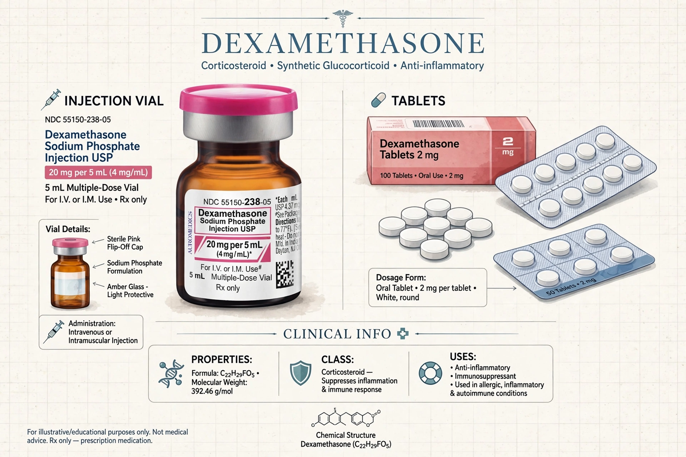

Dexamethasone is a fluorinated corticosteroid medication used to treat rheumatic problems, skin diseases, allergies, asthma, chronic obstructive lung disease, croup, brain swelling, eye pain following surgery, and tuberculosis in combination with antibiotics. In adrenocortical insufficiency it may be used with a mineralocorticoid.

Dexamethasone is about 25 times more potent than hydrocortisone. It is used in the dexamethasone suppression test for Cushing's syndrome, for chemotherapy-induced nausea, and for high-altitude cerebral edema. In 2020 the RECOVERY trial showed it reduced mortality in seriously ill COVID-19 patients requiring oxygen or ventilation.
Effects resemble those of prednisone: hyperglycemia, fluid retention, mood changes, increased infection risk, and with prolonged use osteoporosis and adrenal suppression.
Dexamethasone was first synthesized in 1957 and approved in 1961. It is on the WHO List of Essential Medicines and is widely available as a generic.